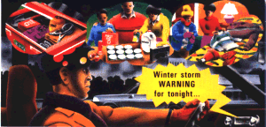

American Red Cross
American Red CrossFederal Emergency Management Agency

Are you ready for a Winter Storm? American Red CrossNational Oceanic and Atmospheric Administration
Reprinted by Permission of the American Red Cross (1997)
Be sure you have properly operating smoke detectors and fire extinguishers.
First aid kit and essential medications
Winter storms bring ice, snow, cold temperatures, and often dangerous driving conditions. Even small amounts of snow and ice can cause severe problems for southern states where winter storms are infrequent.
Be prepared by having various household members do each of the items on the checklist below.
Put together a disaster supplies kit for your home in a clearly labeled, easy-to-grab box. Include a battery-powered NOAA Weather Radio and portable radio, flashlight, extra batteries, canned food and non-electric can opener, first aid supplies (including essential medications), and bottled water.
Location of disaster supplies kit:_____________________
Put together a separate disaster supplies kit for the trunk of each car used by members of your household. Include blankets, extra sets of dry clothing, a shovel, sand, tire chains, jumper cables, a first aid kit, a flashlight with extra batteries, and a brightly colored cloth to tie to the antenna.
Car emergency kit put together and placed in car(s):___________(date)
Winterize the car(s) before winter storm season.
Car(s) winterized:______________________(date)
Designate one household member as the winter storm preparedness leader. Have him or her discuss what to do if a winter storm watch or warning is issued. Have another household member state what he or she would do if caught outside or in a vehicle during a winter storm.
Household winter storm preparedness leader:___________________
Take an American Red Cross first aid course to learn how to treat exposure to the cold, frostbite, and hypothermia.
Household member(s) trained in first aid:______________________
Certifications good through:______________(date)
And remember...when a winter storm, tornado, earthquake, food, fire, or other emergency happens in your community, you can count on your local American Red Cross chapter to be there to help you and your loved ones. That’s been our role for more than 100 years.
For further information on winter storms, ask for Winter Storms... the Deceptive Killer from your local American Red Cross chapter, National Weather Service office, or emergency management office.
NOAA PA 91003
ARC4464
October 1991